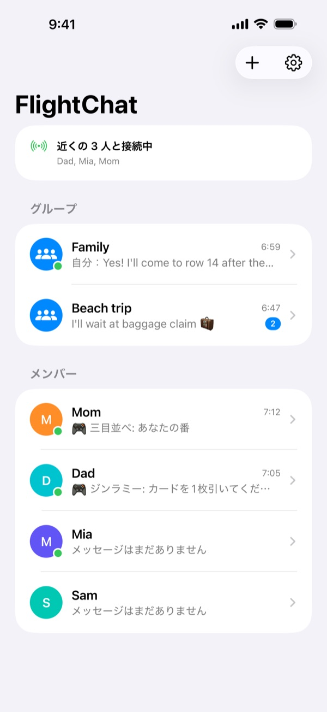
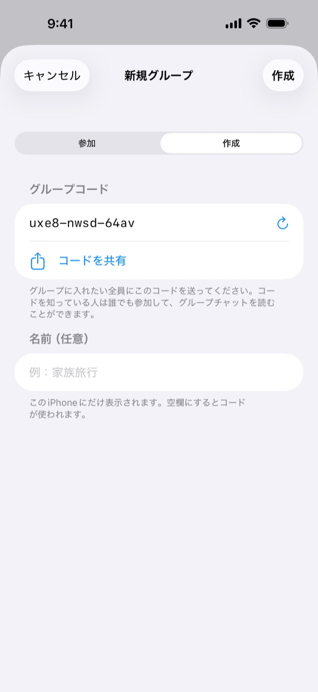
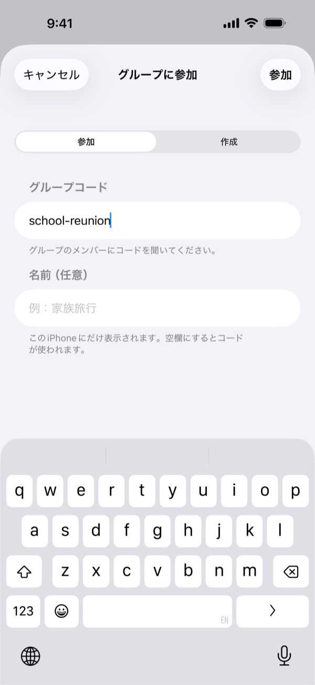
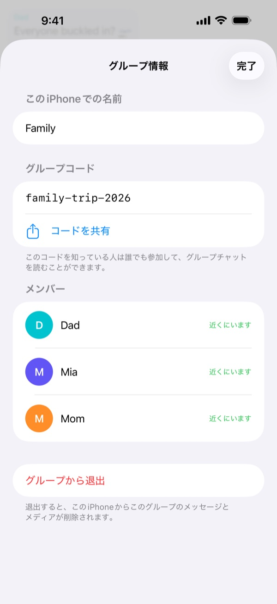
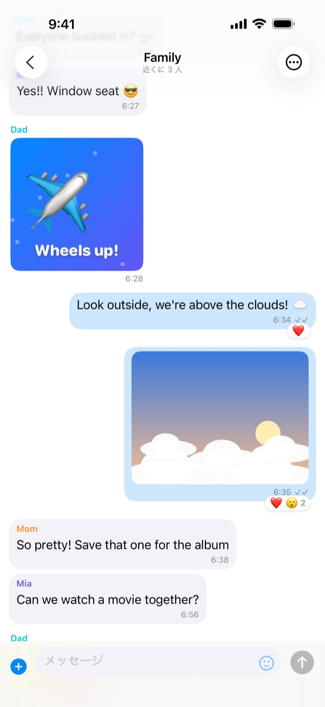
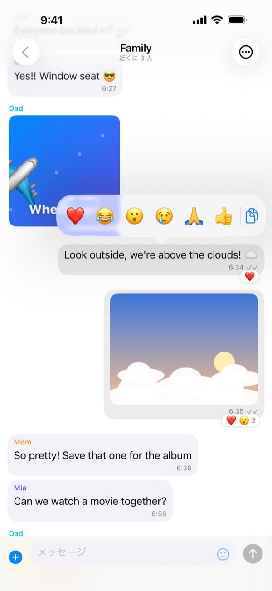
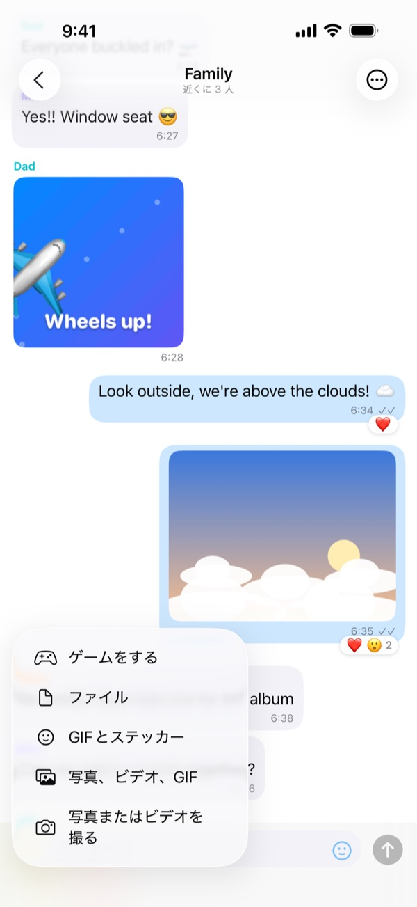
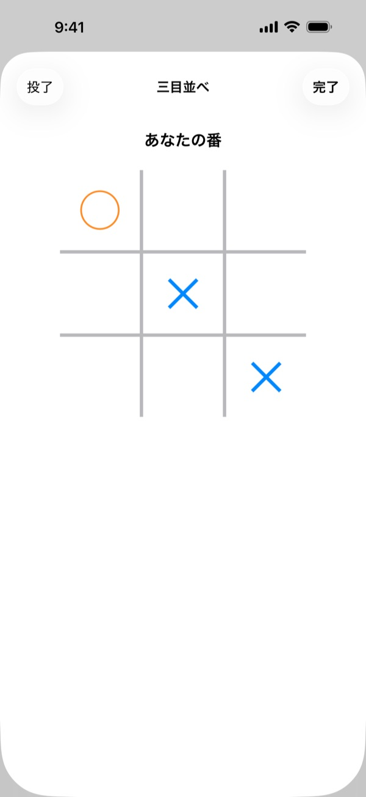
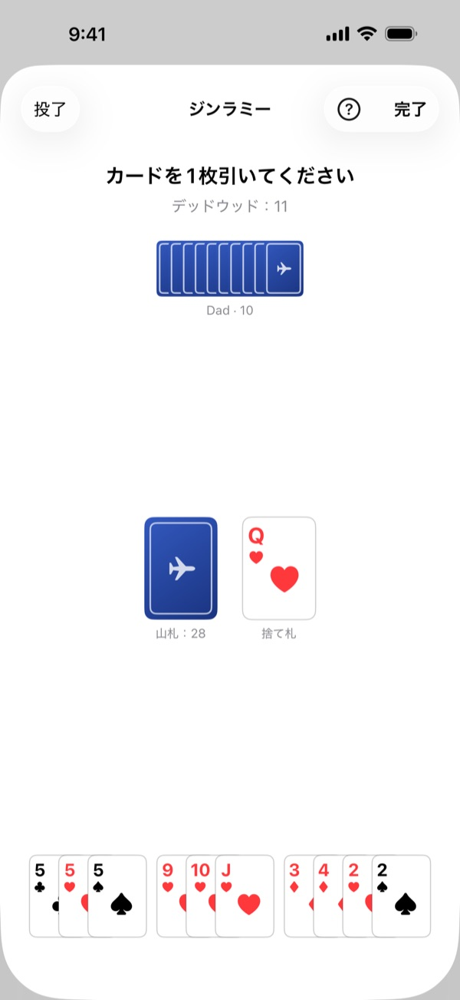
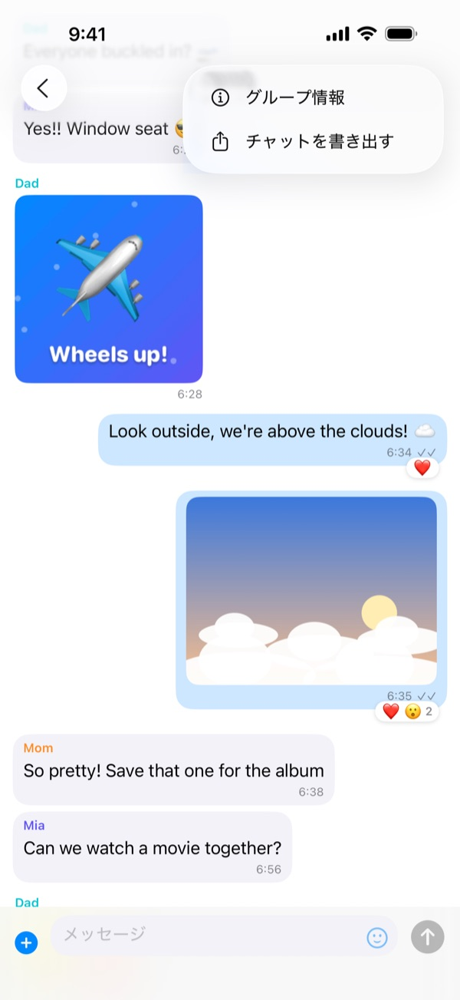

出発前に
家や搭乗口で、みんな一緒にいるうちに準備しておきましょう：
- グループ全員のiPhoneにFlightChatをインストールします。
- 1人がグループを作成し、コードをほかの人に共有します（メッセージなどで）。
- ほかの全員がそのコードでグループに参加します。
- テストメッセージを送って、全員に届くか確認します。
初めてFlightChatを開いたら、ローカルネットワーク上のデバイスの検索を許可してください。許可しないとグループを見つけられません。
機内で
- いつもどおり機内モードをオンにします。
- コントロールセンターを開いて、Wi-FiとBluetoothをオンに戻します。ネットワークに接続する必要はありません。
- FlightChatを開きます。チャット一覧の上部に接続中の人が表示されます。
FlightChatを開いている間だけ接続されます。アプリに戻ると自動的に再接続し、見逃した内容を受け取ります。

グループ
グループとは、同じコードを入力した全員が使える共有チャットです。家族用と同じ便の友だち用など、最大10個のグループに同時に参加し、すべてとつながっていられます。
グループを作成する
- チャット一覧で + をタップし、作成をタップします。
- FlightChatが推測されにくいコードを作成します。必要ならグループに名前を付けます。
- コードを共有をタップしてほかの人に送り、作成をタップします。あとから「グループ情報」で共有することもできます。
グループに参加する
+ をタップしてから参加をタップし、受け取ったコードを入力します。大文字と小文字は区別されません。
グループの名前変更・共有・退出
グループのチャットを開き、⋯ をタップしてからグループ情報をタップします。このiPhoneでのグループ名の変更、コードの確認と共有、メンバーの確認、退出ができます。退出すると、そのグループのメッセージとメディアがこのiPhoneから削除されます。
コードは秘密にしてください。コードを知っている人は誰でもグループに参加してチャットを読めます。



チャット
- グループチャットと個別チャット：グループごとにチャットがあります。メンバーには、同じグループにいる全員が表示されます。個別にメッセージを送るには、その人の名前をタップします。
- 写真、ビデオ、GIF、ファイル：メッセージ欄の横の + をタップします。写真またはビデオを撮るでカメラを使う（ビデオは最長2分）か、手元のものを選びます。スマイルマークをタップするとステッカーやGIFを送れます。
- リアクション：メッセージを長押しして絵文字を選びます。そこからテキストをコピーすることもできます。
- 全画面：写真やビデオをタップします。iPhoneを横にすると大きく表示されます。共有ボタンで保存できます。
- チェックマーク：✓ はメッセージが保存され、接続中の人に送信されたことを示します。✓✓ は宛先の全員に届いたことを示します。
- 近くにいない場合：接続していない人へのメッセージは、再接続したときに送信されます。



ゲーム
個別チャットで相手とちょっとしたゲームができます：+ をタップしてからゲームをするをタップし、ゲームを選びます。チャットに二人分のゲームカードが表示され、タップすると遊べます。終わったら再戦をタップすると、今度は相手が先攻でもう一度遊べます。そのゲームがチャットですでに進行中なら、もう一度選ぶとそのゲームが開きます。
- 三目並べ：交互に ✕ と ◯ を置きます。3つ並べたら勝ちです。
- 四目並べ：交互に列にコマを落とします。縦・横・斜めに4つ並べたら勝ちです。
- じゃんけん：二人同時に選びます。二人とも選ぶまで、相手のiPhoneにあなたの手は分かりません。
- チェッカー：斜めに動き、飛び越えて取ります。キングは斜めにどこまでも動けます。
- バックギャモン：15 個の駒を自陣に集めて上がりましょう。サイコロは自動で振られます。
ゲームは相手にだけ送られます。どちらかが通信範囲から外れても、ゲームは待機し、再接続すると続きから遊べます。

カードゲーム
カードゲームも同じように始めます：+ をタップしてからゲームをする。ゲーム開始時にカードが切られ、画面下に表示される自分の手札だけが見えます。山札をタップして引き、カードをタップして出します。今出せるカードは少し持ち上がって表示されます。
- 戦争：それぞれ一番上のカードをめくり、強い方が両方をもらいます（エースが最強）。引き分けのときは、次の回の勝者がそのカードももらいます。26 回戦のあと、多くのカードを取った方の勝ちです。
- クレイジーエイト：それぞれ 7 枚から始めます。場札と同じスートか同じ数字のカードを出すか、山札から引きます。8 はいつでも出せて、次のスートを決められます。先に手札をすべて出した方の勝ちです。
- ジンラミー：それぞれ 10 枚から始めます。自分の番では、山札か捨て札から 1 枚引き、1 枚捨てます。同じ数字 3〜4 枚、または同じスートの 3 枚以上の連番で役を作ります。残りのカードが 10 点以下ならノックしてこの回を終えられ、0 点ならジンです。
- 3〜4 人のグループゲーム：グループチャットで + をタップし、ゲームをするをタップして、クレイジーエイトかジンラミーを選びます。一緒に遊ぶ人を 2〜3 人選び（近くにいる人は最初から選ばれています）、配るをタップします。順番に回ってプレイします。クレイジーエイトは全員 5 枚、ジンラミーは 3 人なら 10 枚ずつ、4 人なら 7 枚ずつで、誰かがノックすると他の全員が付け札をして点数を数えます。グループの全員がゲームを見られますが、カードが配られるのはプレイヤーだけで、他の人の手札は誰にも見えません。
手札は自分のiPhoneにだけ表示されます。相手に見えるのは枚数だけで、どのカードかは見えません。ジンラミーの最後には得点を確認できるよう、両方の手札が表示されます。

FlightChat Pro
FlightChat は、チャット、写真、ステッカー、ほとんどのゲームを無料で使えます。FlightChat Pro は 1 回限りの購入で、バックギャモン、クレイジーエイト、ジンラミーを始められるようになります。購入するまで、ゲーム一覧ではこれらに Pro と表示されます。
Pro が必要なのは、Pro のゲームを始める人だけです。Pro がない友だちも、あなたが始めたゲームに 1 対 1 でもグループでも参加して遊べます。
設定 → FlightChat Pro から、または Pro のゲームをタップして購入できます。1 回払いでサブスクリプションではなく、ファミリー共有で家族と共有できます。購入にはインターネットが必要なので、搭乗前に購入してください。購入後は Pro をオフラインで使えます。新しい iPhone では購入を復元をタップします。
遊び方
FlightChat の各ゲームのルールです。ゲーム中に遊び方をタップすると、そのゲームのルールに直接移動します。
三目並べ
- 2 人が 3 × 3 のマスに交互に置きます。先攻が ✕、後攻が ◯ です。
- 自分の番では、空いているマスをタップして印を置きます。
- 縦・横・斜めのどれかに自分の印を 3 つ並べたら勝ちです。先にマスが埋まったら引き分けです。
四目並べ
- 2 人が横 7 列・縦 6 段の盤に交互にコマを落とします。先攻が赤、後攻が黄色です。
- 自分の番では、列をタップします。コマはその列のいちばん下の空きマスに落ちます。いっぱいの列には入れられません。
- 縦・横・斜めのどれかに自分のコマを 4 つ並べたら勝ちです。先に盤が埋まったら引き分けです。
じゃんけん
- 2 人が同時にグー、チョキ、パーのどれかを選びます。
- グーはチョキに、チョキはパーに、パーはグーに勝ちます。同じ手ならあいこです。
- 相手が選ぶまで、あなたの手は封印されたままなので、どちらも相手の手を先に見ることはできません。
チェッカー
- 8 × 8 の盤の暗いマスに、それぞれ 12 個の駒を置きます。自分の駒は常に下側です。先攻は明るい色の駒です。
- 駒は斜め前に 1 マス進みます。隣の相手の駒を飛び越えて、その先の空きマスに着地すると取れます。前にも後ろにも取れます。
- 取れるときは必ず取ります。着地した駒がさらに取れるなら、同じ番のまま続けます。着地するマスを順にタップしてください。
- 相手側のいちばん奥の列に着いた駒はキング（♛）になります。キングは斜めに何マスでも動け、離れた駒も取れて、その先の空きマスならどこにでも着地できます。
- 相手の駒がなくなるか、相手が動けなくなったら勝ちです。お互い 30 手ずつ、キングだけが動いて何も取られなかったら引き分けです。
バックギャモン
- それぞれ 15 個の駒を盤上で右下の自陣（インナーボード）まで進め、そこから上がります。先に 15 個すべてを上がった人の勝ちです。
- 毎回サイコロが 2 個自動で振られます。サイコロ 1 個ごとに駒を 1 つ動かすか、1 つの駒を両方の目で動かします。ゾロ目は 4 回動かします。両方の目を使えるなら必ず使い、1 つしか使えないときは、できれば大きい方の目を使います。
- 相手の駒が 2 個以上あるポイントには止まれません。相手の駒が 1 個だけのポイントに止まるとヒットになり、その駒はバーに置かれ、持ち主はほかの駒を動かす前にまずそれを戻さなければなりません。
- すべての駒が自陣に入ったら、ちょうどの目で上がるか、大きい目でいちばん奥のポイントから上がれます。
- サイコロ 1 個ごとに、駒をタップしてから行き先をタップします。取り消すで 1 手戻り、ターン終了で番を終えます。動けないときはパスをタップします。
- 相手が 1 個も上がらないうちに勝つとギャモン、相手の駒がまだバーかあなたの自陣にあるとバックギャモンです。ダブリングキューブはありません。
戦争
- カードを切って半分に分けます。それぞれ 26 枚、裏向きです。
- 毎回、2 人が一番上のカードをめくり、強い方が 2 枚とももらいます。エースが最強で、次にキング、クイーン、ジャック、そして 10 から 2 の順です。
- 2 枚が同じ強さなら場に残り、次の回の勝者がそれらももらいます。
- 26 回戦のあと、多くのカードを取った方の勝ちです。
クレイジーエイト
- 2 人なら 7 枚ずつ、3〜4 人（グループチャット）なら 5 枚ずつ配ります。1 枚を表にして場札を始め、残りは山札にします。
- 自分の番では、場札の一番上とスートか数字が同じカードを出すか、山札から 1 枚引きます。出す前に何枚でも引けます。
- 8 はワイルドカードです。どのカードの上にも出せて、次の人が出すスートを決められます。
- 出せるカードがなく山札も空なら、パスをタップします。
- 先に手札をすべて出した人の勝ちです。誰も出せなくなったら、手札の点数が最も低い人の勝ちです。8 は 50 点、絵札は 10 点、エースは 1 点、その他は数字どおりです。
ジンラミー
- それぞれ 10 枚ずつ配ります（グループチャットで 4 人なら 7 枚ずつ）。1 枚を捨て札の最初にして、残りは山札にします。
- 自分の番では、山札か捨て札の一番上から 1 枚取り、1 枚捨てます。捨て札から取ったばかりのカードはそのまま捨てられません。
- 役を作ります。同じ数字 3〜4 枚（7♣ 7♥ 7♠）、または同じスートで 3 枚以上の連番（4♥ 5♥ 6♥）です。エースは最弱です。FlightChat が役をまとめて並べます。
- 役になっていないカードがデッドウッドです。エースは 1 点、数字札は数字どおり、絵札は 10 点です。合計はデッドウッドに表示されます。
- 捨てたあとのデッドウッドが 10 点以下なら、ノックしてこの回を終えられます。0 点ならジンです。ほかのプレイヤーは、ノックした人の役に付けられるカードを付けます（ジンのときは付けられません）。
- 得点：ノックした人は、ほかの各プレイヤーとのデッドウッドの差をもらいます。ジンは全員のデッドウッドに 25 点を加えた点数です。ノックした人と同じかそれ以下のデッドウッドの人はアンダーカットとなり、差に 25 点を加えた点数をもらいます。山札が残り 2 枚になったら、その回は引き分けです。
チャットを書き出す
チャットを開き、⋯ をタップしてからチャットを書き出すをタップします。会話のテキストと、このiPhoneにある写真・ビデオ・ファイルを含むZIPファイルが作られます。「ファイル」に保存したり、AirDropで送ったり、オンラインに戻ってからメールで送ったりできます。

ブロックと報告
- 個別チャットで：⋯ をタップしてからブロックまたは報告をタップします。
- グループチャットで：相手のメッセージを長押しして、手のアイコンをタップします。
- 相手のメッセージが表示されなくなり、相手もあなたにメッセージを送れなくなります。相手には通知されません。
- 報告してブロックを選ぶと、報告がメールで私たちに届きます。24時間以内に返信します。
- ブロックの解除は設定 → ブロック中の人で行います。
ブロックした相手がグループコードを知っていれば、グループチャットを読むことはできます。完全に外すには、ほかのメンバーと新しいグループを作り、古いグループから退出してください。
機内で身の危険を感じたら、すぐに客室乗務員に伝えてください。
接続できないとき
- コントロールセンターでWi-FiとBluetoothが両方オンになっているか確認します。機内モードにするとオフになります。
- 両方のiPhoneでFlightChatを開いたままにします。
- 同じグループにいるか確認します：グループチャットを開き、⋯ をタップしてからグループ情報をタップし、コードを見比べます。
- iPhoneの設定アプリでFlightChatを開き、ローカルネットワークがオンになっているか確認します。
- 近くに移動してください。数列離れた程度なら通常は接続できますが、大型機の端と端では届かないことがあります。
- グループに参加したばかりですか？すでに参加しているiPhoneが数秒であなたを見つけます。
- 同時に接続できるのは、あなたのiPhoneを含めて最大8台です。
言語
FlightChatはiPhoneの言語（英語、フランス語、スペイン語、中国語、日本語、ヘブライ語、韓国語、アラビア語）で表示されます。ヘブライ語とアラビア語は右から左に表示されます。メッセージ、名前、ステッカーは送られたとおりに表示されます。FlightChatだけ言語を変えるには、チャット一覧の歯車をタップし、言語を選んで保存をタップし、FlightChatを閉じて開き直します。iPhoneの設定アプリのアプリ → FlightChat → 言語でも選べます。
データについて
メッセージはあなたのiPhoneとグループのiPhoneにだけ保存されます。アカウントもサーバもありません。すべて削除するには、設定を開いてチャット履歴を消去をタップします。詳しくはプライバシーポリシーと利用規約（英語）をご覧ください。
お問い合わせ
うまく動かない、質問がある場合は、biomass-65-jumbo@icloud.com までメールでご連絡ください。